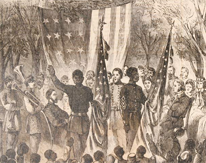

|
As the first Union regiment of ex-slaves organized in the South during the Civil
War, the First South Carolina Volunteers assumed the burden of proving to a
skeptical North that blacks could be effective soldiers. Although officially
mustered on November 7, 1862, the regiment emerged from earlier independent
efforts of General David Hunter (1802-1886) to organize black troops in the
Department of the South. Hunter's unit never received authorization from the War
Department, and within a few months he disbanded all but one company of his men.
General Rufus Saxton (1824-1908), supervisor of freed slaves in Hunter's
department, took control of the unit, and on August 25, 1862, he gained
Secretary of War Edwin M. Stanton's approval to enlist "volunteers of African
descent as you may deem expedient, not exceeding five thousand." According to
Stanton, the soldiers--and their families--would be granted their freedom and were
entitled to receive "the same pay and rations as are allowed, by law, to
volunteers in the service."
|

This engraving shows members of the First South
Carolina Infantry bringing news of the Emancipation Proclamation
to their brethren South Carolina.
|
Thomas Wentworth Higginson (1823-1911), the fiery Massachusetts abolitionist,
commanded the regiment and led it on daring raids from Port Royal, S.C., to
Palatka, Fla. Higginson and his men understood that they "fought with ropes
around their necks." They faced execution or enslavement if captured by
Southerners, who considered black soldiers to be rebellious slaves and their
white officers as treacherous criminals. Perhaps more galling, they were
subjected to scurrilous charges of racial inferiority from the northern press.
Nevertheless, Higginson sought to test his men in combat to dispel racist
accusations that blacks could not or would not fight. The men, former slaves
from South Carolina and Florida, quickly proved their ability and Higginson
published stirring accounts of their exploits, laying the groundwork for
full-scale black recruitment. Both Higginson and Saxton proclaimed that the men
fought as bravely as any other regiment in the army. Moreover, Higginson
maintained that the unit, the first to fight alongside whites under the same
command in regular duty, helped to reduce racism in the army.
The regiment was authorized to draft former slaves into service, which led to
some illegal impressments. But the overwhelming number of blacks volunteered for
service to win freedom for themselves and their families. The government's
refusal to grant the promised equal pay caused dissension in the "First," as it
did among nearly all black regiments, but Higginson claimed that he never
resorted to harsh measures to maintain discipline. The men, he believed, had
joined out of the deepest sense of patriotism, a hatred of slavery, and "a love
of liberty."
On February 8, 1864, the "First" was redesignated the Thirty-third United
States Colored Troops (USCT) and subsequently took part in battles at Pocotaligo
and James Island, in South Carolina. The Thirty-third USCT performed provost
guard duty at Charleston, S.C., and Savannah, Ga., in February and March 1865,
and was mustered out on February 9, 1866.
Source: Jack Salzman, ed. Encyclopedia of African-American Cultural
Heritage (New York: MacMillan, 1995), 970-971.
|